🗼 도쿄 93건
팝업스토어 · 59
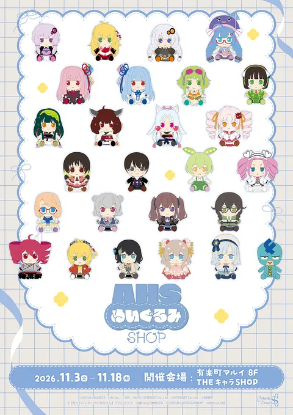
AHS 봉제인형 SHOP (유라쿠초 마루이)11/3(화) ~ 11/18(수)📍 유라쿠초 마루이 8층그라니프 × 극장판 체인소맨 레제편 콜라보 (굿즈·카페 라테)11/3(화) ~ 11/30(월)📍 그라니프 도쿄 2F 그라니프 카페 (시부야구 진구마에 4-25-13) · 굿즈는 그라니프 국내 매장·공식 온라인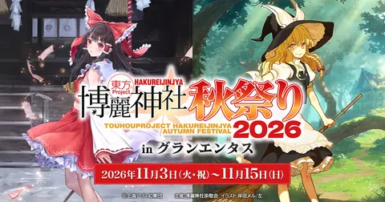
동방 Project 하쿠레이 신사 가을 축제 2026 in 그랑엔타스 (아키하바라 오노덴 1층)11/3(화) ~ 11/15(일)📍 그랑엔타스 (아키하바라 오노덴 빌딩 1층)이토 준지 『매니악』 POP UP in TOWER RECORDS (선샤인시티 알파점)11/5(목) ~ 11/15(일)📍 타워레코드 선샤인시티 알파 브랜치점 (이케부쿠로)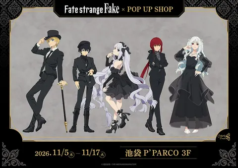
페이트/스트레인지 페이크 팝업 제2탄 블랙 의상 (이케부쿠로)11/5(목) ~ 11/17(화)📍 이케부쿠로 P'PARCO 3층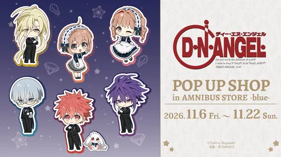
D・N・ANGEL POP UP SHOP in AMNIBUS STORE -blue-11/6(금) ~ 11/22(일)📍 AMNIBUS STORE -blue- (MAGNET by SHIBUYA109 5층)🎌GA문고 20주년 기념 POP UP SHOP (전반)11/6(금) ~ 11/15(일)📍 코토부키야 아키하바라관 2F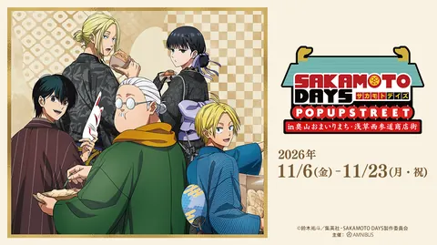
SAKAMOTO DAYS POP UP STREET in 아사쿠사11/6(금) ~ 11/23(월)📍 오쿠야마 오마이리마치 상점가·아사쿠사 니시산도 상점가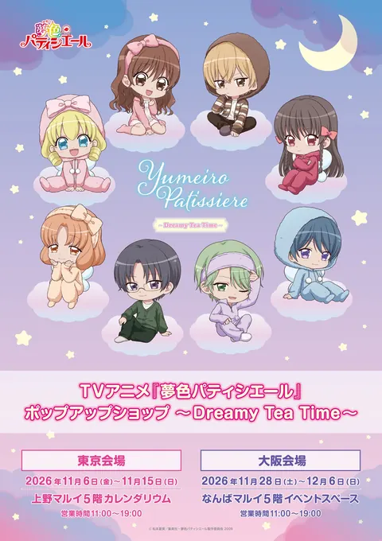
TV 애니메이션 유메이로 파티시에르 POP UP SHOP11/6(금) ~ 11/15(일)📍 우에노 마루이 5F 캘린더리움극장판 『100미터.』 POP UP SHOP11/6(금) ~ 11/23(월)📍 MEDICOS SHOP 신주쿠 (신주쿠 마루이 아넥스 2F)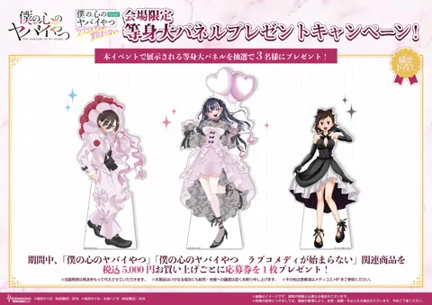
내 마음의 위험한 녀석 완결 & 러브코미디가 시작되지 않아 POP UP SHOP11/6(금) ~ 11/23(월)📍 신주쿠 마루이 멘 8층 이벤트 스페이스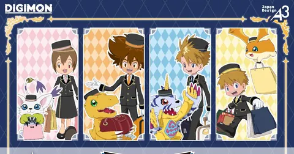
디지몬 어드벤처 POP UP SHOP (도쿄 캐릭터 스트리트 · eeo)11/6(금) ~ 11/19(목)📍 도쿄역 이치방가이 B1 도쿄 캐릭터 스트리트 F계단 아래 왜건마계에 들어왔습니다! 이루마 군 팝업스토어 (기치조지 로프트)11/6(금) ~ 11/22(일)📍 기치조지 로프트 2층 버라이어티 잡화 매장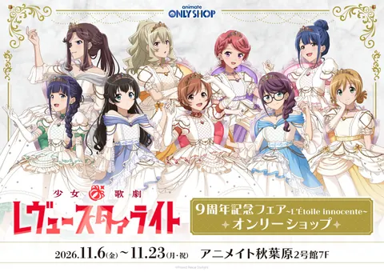
소녀☆가극 레뷰 스타라이트 9주년 기념 페어 온리숍11/6(금) ~ 11/23(월)📍 애니메이트 아키하바라 2호관 7F아이돌마스터 밀리언 라이브! ARC-FLAGS 팝업 코너 (코토부키야 아키하바라관)11/6(금) ~ 11/23(월)📍 코토부키야 아키하바라관 1층카드파이트!! 뱅가드 Divinez 시리즈 완결 기념 POP UP STORE11/6(금) ~ 11/23(월)📍 뱅가드 스토어 (AKIHABARA 게이머즈 4층), 애니메이트 이케부쿠로 본점·아키하바라·시부야·신주쿠 외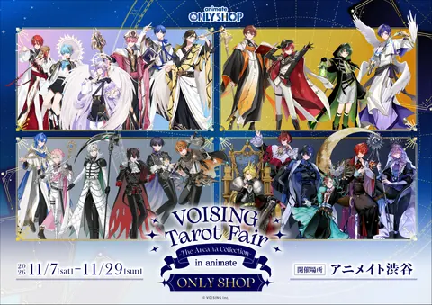
VOISING Tarot Fair -The Arcana Collection- 온리숍 (애니메이트 시부야)11/7(토) ~ 11/29(일)📍 애니메이트 시부야점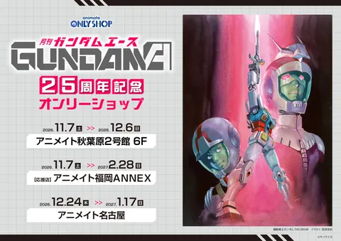
건담 에이스 25주년 온리숍 (애니메이트 아키하바라 2호관)11/7(토) ~ 12/6(일)📍 애니메이트 아키하바라점 2호관 6층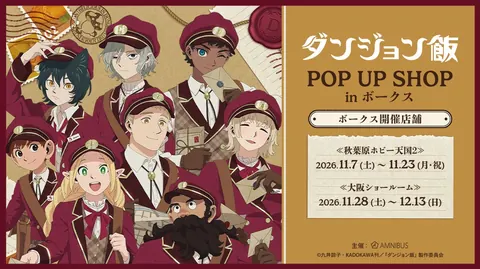
던전밥 POP UP SHOP in 볼크스 (아키하바라)11/7(토) ~ 11/23(월)📍 볼크스 아키하바라 호비 천국2 6층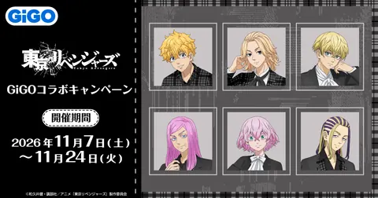
도쿄 리벤저스 GiGO POP UP SHOP 체크 ver. (도쿄)11/7(토) ~ 11/24(화)📍 GiGO 총본점 (아키하바라)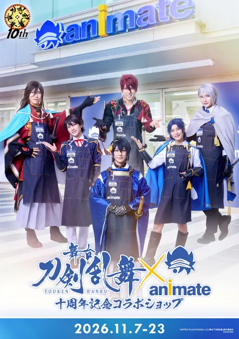
무대 『도검난무』 × 애니메이트 10주년 기념 콜라보숍11/7(토) ~ 11/23(월)📍 애니메이트 이케부쿠로 본점 7층 SOUTH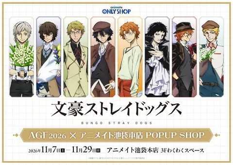
문호 스트레이독스 AGF2026 × 애니메이트 이케부쿠로 본점 POPUP SHOP11/7(토) ~ 11/29(일)📍 애니메이트 이케부쿠로 본점 3층 와쿠와쿠 스페이스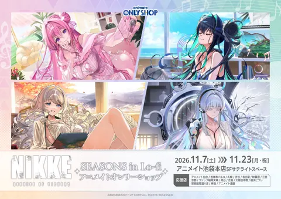
승리의 여신: 니케 SEASONS in Lo-fi 온리숍 (애니메이트 이케부쿠로 본점)11/7(토) ~ 11/23(월)📍 애니메이트 이케부쿠로 본점 5층 새틀라이트 스페이스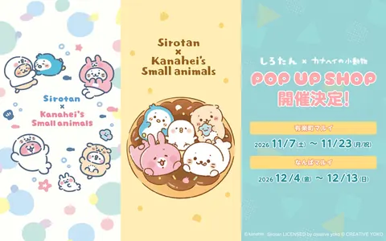
시로탄 × 카나헤이의 소동물 POP UP SHOP11/7(토) ~ 11/23(월)📍 유라쿠초 마루이 8층 이벤트 스페이스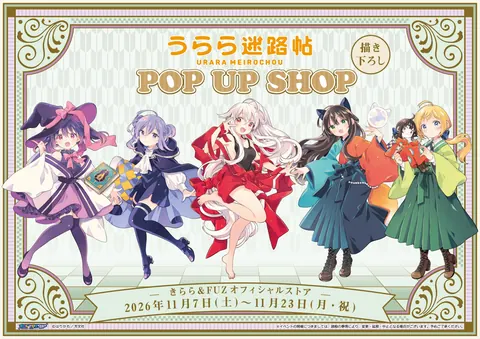
우라라 미로첩 POP UP SHOP (신주쿠 · 키라라&FUZ 오피셜 스토어)11/7(토) ~ 11/23(월)📍 키라라&FUZ 오피셜 스토어 (신주쿠 마루이 아넥스 2층)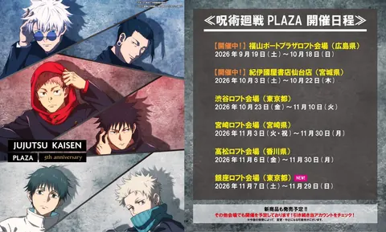
주술회전 PLAZA 긴자 로프트11/7(토) ~ 11/29(일)📍 긴자 로프트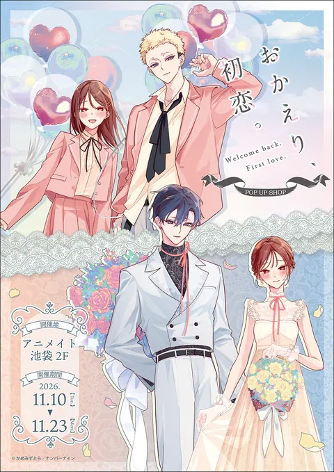
『어서 와, 첫사랑』 POP UP SHOP11/10(화) ~ 11/23(월)📍 애니메이트 이케부쿠로 본점 2F데이이치의 나라 POP UP SHOP in AMNIBUS STORE -green-11/10(화) ~ 11/19(목)📍 시부야 모디 3F AMNIBUS STORE -green- 제5인격 팝업숍 in 핸즈 (신주쿠)11/10(화) ~ 11/24(화)📍 핸즈 신주쿠점
제5인격 팝업숍 in 핸즈 (신주쿠)11/10(화) ~ 11/24(화)📍 핸즈 신주쿠점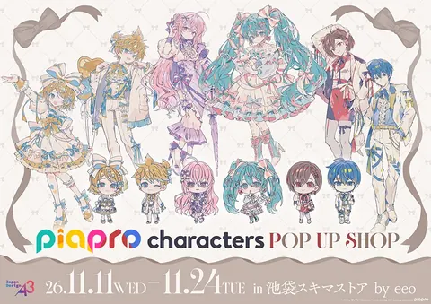
피아프로 캐릭터즈 POP UP SHOP in 이케부쿠로 스키마 스토어11/11(수) ~ 11/24(화)📍 JR 이케부쿠로역 지하 중앙통로 중앙 개찰구 앞 (스키마 스토어)TRIGUN STARGAZE POP UP SHOP (신주쿠 마켓 스페이스 · eeo)11/12(목) ~ 11/25(수)📍 JR 신주쿠역 중앙동쪽 개찰구 밖 신주쿠 마켓 스페이스CHAINSAW MAN PLAZA 레제편 (시부야 로프트)11/13(금) ~ 11/29(일)📍 시부야 로프트 6층 아트&컬처 플로어 포럼AParadox Live 7th POP-UP "DOPE WORLD" (도쿄 애니메 센터)11/13(금) ~ 11/23(월)📍 도쿄 애니메 센터 (시부야 MODI 2층)TV 애니메이션 『Summer Pockets』 POP UP SHOP vol.Ⅱ (보크스 아키하바라 호비천국2)11/13(금) ~ 11/29(일)📍 보크스 아키하바라 호비천국2 6층 이벤트 스페이스『얌전해 보이는 남자의 엄청난 비밀을 알아버렸다』 POP UP SHOP (신주쿠 · MEDICOS SHOP)11/13(금) ~ 11/24(화)📍 MEDICOS SHOP 신주쿠 (신주쿠 마루이 아넥스 2층)골든 카무이 × 산리오 캐릭터즈 POP UP SHOP (도쿄)11/13(금) ~ 11/26(목)📍 키디랜드 하라주쿠점·신주쿠점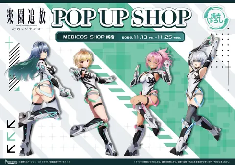
낙원추방 마음의 레조넌스 POP UP SHOP11/13(금) ~ 11/25(수)📍 MEDICOS SHOP 신주쿠 (신주쿠 마루이 아넥스 2층)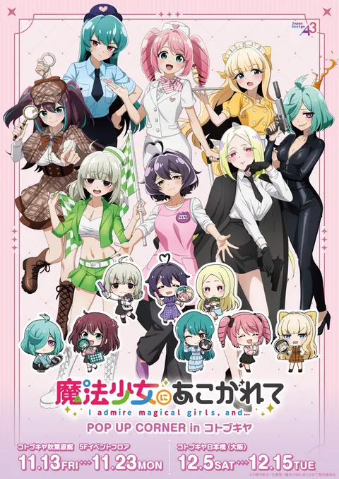
마법소녀를 동경해서 POP UP CORNER in 고토부키야11/13(금) ~ 11/23(월)📍 고토부키야 아키하바라관 5층 이벤트 플로어봇치 더 록! POP UP Winter 2026/2027 (아트레 아키하바라)11/13(금) ~ 11/26(목)📍 아트레 아키하바라샤인포스트 POP UP SHOP11/13(금) ~ 11/29(일)📍 아미아미 아키하바라 피규어타워점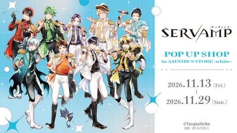
서뱀프 「아이돌」 팝업 (시부야)11/13(금) ~ 11/29(일)📍 시부야 MODI 4층 AMNIBUS STORE -white-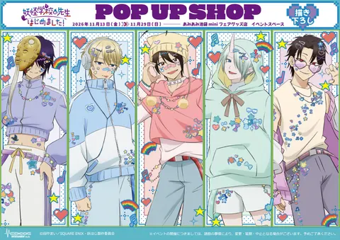
요괴학교 선생님 시작했습니다! POP UP SHOP11/13(금) ~ 11/29(일)📍 아미아미 이케부쿠로 mini 페어굿즈점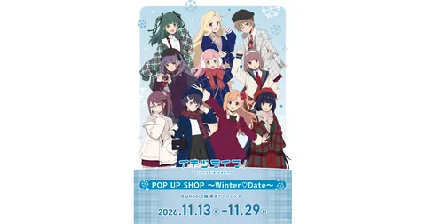
이키즈라이브! 러브라이브! BLUEBIRD 팝업 ~Winter♡Date~11/13(금) ~ 11/29(일)📍 도쿄 애니메 센터 in DNP PLAZA SHIBUYA (시부야 MODI 2층)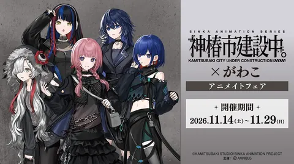
TV 애니메이션 『카미츠바키시 건설 중。』 × 가와코 애니메이트 페어11/14(토) ~ 11/29(일)📍 애니메이트 이케부쿠로 본점·아키하바라점 외 (삿포로·나고야·후쿠오카·오사카 닛폰바시, 통판)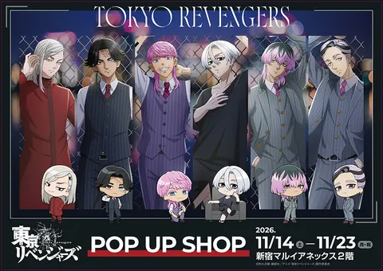
도쿄 리벤저스 POP UP SHOP (신주쿠 마루이 아넥스)11/14(토) ~ 11/23(월)📍 신주쿠 마루이 아넥스 2층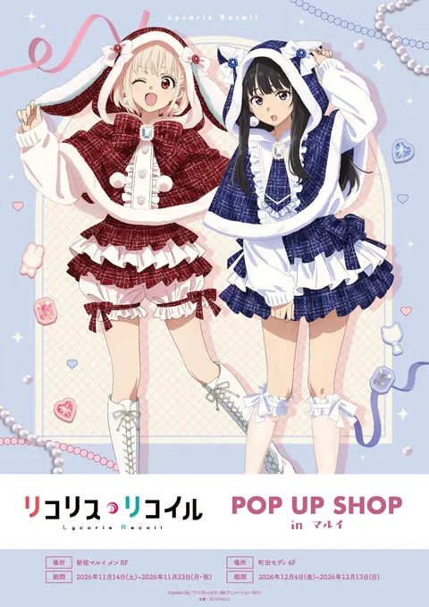
리코리스 리코일 POP UP SHOP (신주쿠 마루이 멘)11/14(토) ~ 11/23(월)📍 신주쿠 마루이 멘생큐피치·하이퍼인플레이션 POP UP SHOP11/14(토) ~ 11/29(일)📍 MEDICOS SHOP 신주쿠 (신주쿠 마루이 아넥스 2층)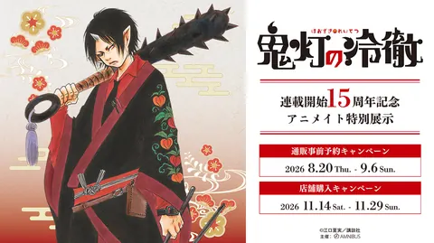
호오즈키의 냉철 연재 15주년 기념 애니메이트 특별 전시 (이케부쿠로)11/14(토) ~ 11/29(일)📍 애니메이트 이케부쿠로 본점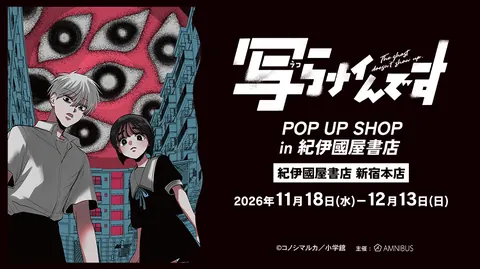
우츠라나인데스 POP UP SHOP in 기노쿠니야 서점11/18(수) ~ 12/13(일)📍 기노쿠니야 서점 신주쿠 본점 8F스고이누 첫 POP UP (시부야 모디)11/19(목) ~ 11/30(월)📍 시부야 모디 1층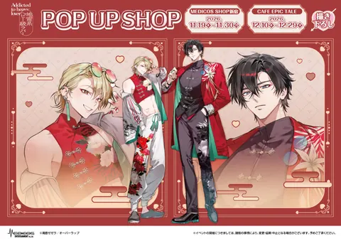
지뢰계 헤비급 러버 팝업 (신주쿠)11/19(목) ~ 11/30(월)📍 MEDICOS SHOP 신주쿠 (신주쿠 마루이 아넥스 2층)🎌GA문고 20주년 기념 POP UP SHOP (후반)11/20(금) ~ 11/29(일)📍 코토부키야 아키하바라관 2F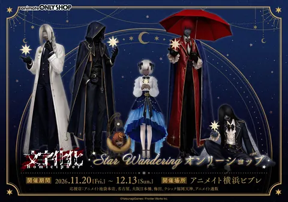
모지바케카 Star Wandering 온리숍 응원점 (도쿄)11/20(금) ~ 12/13(일)📍 애니메이트 이케부쿠로 본점 (응원점)괭이갈매기 울 적에 POP UP SHOP (이케부쿠로 스키마 스토어 · eeo)11/25(수) ~ 12/8(화)📍 JR 이케부쿠로역 지하 중앙통로 중앙개찰구 앞 이케부쿠로 스키마 스토어Dr.STONE POP UP SHOP (신주쿠 마켓 스페이스 · eeo)11/26(목) ~ 12/9(수)📍 JR 신주쿠역 중앙동쪽 개찰구 밖 신주쿠 마켓 스페이스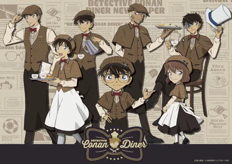
「명탐정 코난 다이너」 개업 기념 POP UP SHOP (시부야 스트림)11/26(목) ~ 12/21(월)📍 시부야 스트림 3층 이벤트 스페이스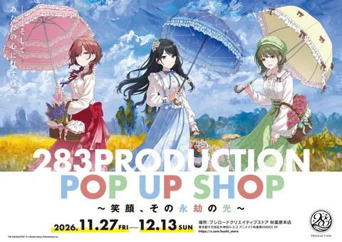
283PRODUCTION POP UP SHOP ~미소, 그 영겁의 빛~ (샤니마스)11/27(금) ~ 12/13(일)📍 부시로드 크리에이티브 스토어 아키하바라 본점 (애니메이트 아키하바라 ANNEX 5층)머메이드 멜로디 피치피치핏치 POP UP (eeo POP-UP STORE)11/27(금) ~ 12/9(수)📍 eeo POP-UP STORE (이케부쿠로)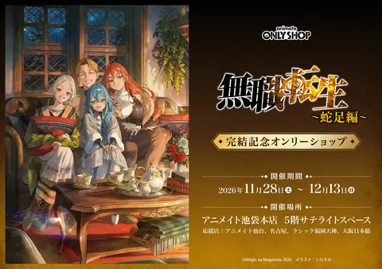
『무직전생 ~사족편~』 완결 기념 온리숍 (애니메이트 이케부쿠로 본점)11/28(토) ~ 12/13(일)📍 애니메이트 이케부쿠로 본점 5층 새틀라이트 스페이스콜라보카페 · 17
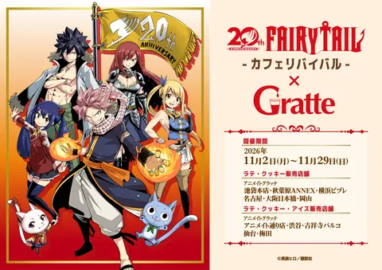
20th 페어리 테일 -카페 리바이벌- × 그라테 (도쿄)11/2(월) ~ 11/29(일)📍 애니메이트 그라테 이케부쿠로 본점·아키하바라 ANNEX·애니메이트 거리점·시부야·기치조지 파르코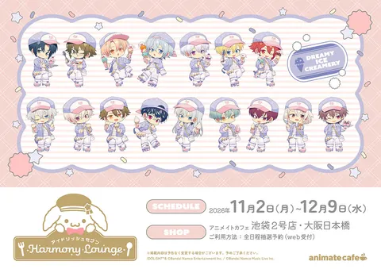
아이돌리쉬 세븐 Harmony Lounge / DREAMY ICE CREAMERY (애니메이트 카페 이케부쿠로 2호점)11/2(월) ~ 12/9(수)📍 애니메이트 카페 이케부쿠로 2호점 (aune 이케부쿠로 4층)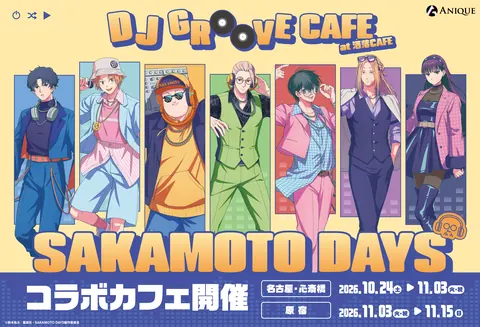
사카모토 데이즈 DJ 그루브 카페11/3(화) ~ 11/15(일)📍 샤레 CAFE 하라카도점 (도큐플라자 하라주쿠)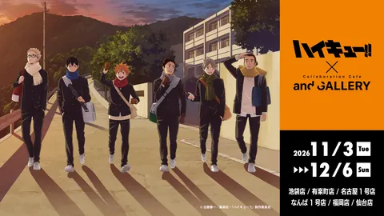
하이큐!! × and GALLERY 콜라보 카페11/3(화) ~ 12/6(일)📍 and GALLERY 이케부쿠로점·유라쿠초점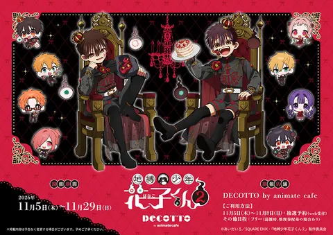
TV애니 『지박소년 하나코 군 2』 × DECOTTO by animate cafe11/5(목) ~ 11/29(일)📍 DECOTTO by animate cafe (이케부쿠로 PACKS 1층)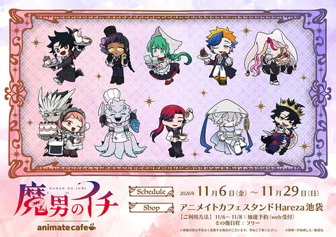
마남의 이치 × 애니메이트 카페 스탠드 Hareza 이케부쿠로11/6(금) ~ 11/29(일)📍 애니메이트 카페 스탠드 Hareza 이케부쿠로 (나카이케부쿠로 공원 안)사이키 쿠스오의 재난 콜라보 카페 「ΨCHIC DINER」 (도쿄 이케부쿠로)11/6(금) ~ 11/29(일)📍 캐라움 카페 (이케부쿠로 마루빌 4층)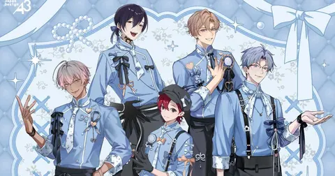
Toxic-a-Holic eeo Cafe (이케부쿠로)11/7(토) ~ 11/19(목)📍 eeo Cafe (미나미이케부쿠로 1-9-21 JK7 1층)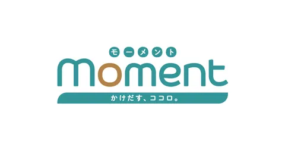
밤부 코믹스 moment×아메이로 창간 11주년 콜라보 카페11/11(수) ~ 11/25(수)📍 THE캬라 CAFÉ 그랜드스케이프 이케부쿠로점 2F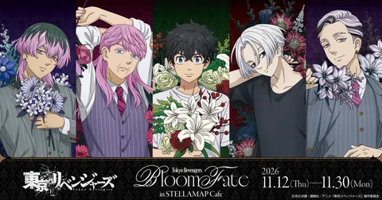
TV 애니메이션 도쿄 리벤저스 BloomFate in STELLAMAP Cafe11/12(목) ~ 11/30(월)📍 STELLAMAP Cafe (아키하바라)살짝 위험한 시티(쵸콧토 야바시티) 카페스탠드11/12(목) ~ 12/6(일)📍 애니메이트 카페스탠드 이케부쿠로 4호점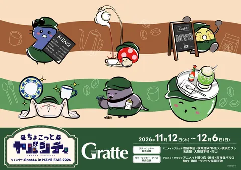
쵸콧토 야바시티 × 그라테 (도쿄 애니메이트 4곳)11/12(목) ~ 12/6(일)📍 애니메이트 이케부쿠로 본점·아키하바라 ANNEX·시부야·기치조지 파르코 (그라테)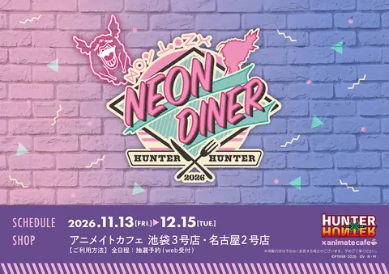
헌터×헌터 NEON DINER 콜라보 카페 (애니메이트 카페 이케부쿠로 3호점)11/13(금) ~ 12/15(화)📍 애니메이트 카페 이케부쿠로 3호점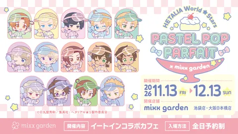
헤타리아 World★Stars × mixx garden 콜라보 카페 (이케부쿠로)11/13(금) ~ 12/13(일)📍 mixx garden 이케부쿠로점 (THE KINDAI 1 IKEBUKURO 4층)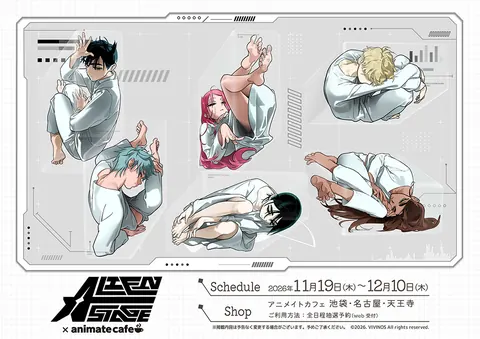
「ALIEN STAGE」 EXHIBITION × 애니메이트 카페 (이케부쿠로)11/19(목) ~ 12/10(목)📍 애니메이트 카페 이케부쿠로 (이케부쿠로 PACKS 7·8층)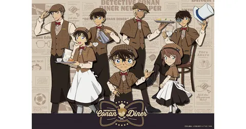
명탐정 코난 다이너 (상설 콜라보 레스토랑)11/19(목)📍 시부야 스트림 4층메다로트 × 콜라보 카페 본포 (도쿄)11/20(금) ~ 12/13(일)📍 콜라보 카페 본포 아키하바라점전시·행사 · 12
나카노×스기나미×도시마 애니·만화 페스 2026 in 도시마 (도키와장 4컷 만화 대상 전시 + 3구 디지털 스탬프 랠리)11/1(일) ~ 11/23(월)📍 도키와장 만화 뮤지엄·도키와장 거리 쇼와 레트로관 (미나미나가사키)고질라 박람회 마이너스의 세계11/6(금) ~ 11/17(화)📍 다이마루 도쿄점 11층 행사장주술회전 「사멸회유」 × 요미우리랜드·HANA·BIYORI 콜라보11/6(금) ~ 12/13(일)📍 요미우리랜드 · HANA·BIYORI (이나기시)쵸콧토 야바시티展 (이케부쿠로 PARCO FACTORY)11/6(금) ~ 11/30(월)📍 이케부쿠로 PARCO 본관 7층 PARCO FACTORY超 다마고치 축제 in 시부하라11/7(토) ~ 12/6(일)📍 도큐플라자 하라주쿠 「하라카도」 4층 MAZE 외나카노×스기나미×도시마 애니·만화 페스 2026 in 스기나미 (제작사 상영회·토크, 애니송 앙상블)11/7(토) ~ 11/8(일)📍 스기나미 회관 (스기나미 애니메이션 뮤지엄 병설, 오기쿠보)BLACK LAGOON 25주년 원화전11/13(금) ~ 12/6(일)📍 선샤인시티 선샤인60 전망대 텐보파크 이벤트 스페이스 메이드 인 어비스전 (후기)11/13(금) ~ 11/29(일)📍 세이부 이케부쿠로 본점 서적관 1F·B1걸즈 밴드 크라이 특별 기획전 (이케부쿠로 · 아니메 도쿄 스테이션)11/14(토) ~ 1/31(일)📍 아니메 도쿄 스테이션 (이케부쿠로)치이카와 파크 크리스마스 (이케부쿠로 선샤인시티)11/20(금) ~ 12/25(금)📍 선샤인시티 아넥스 B1F·1F 치이카와 파크후와후완더 시나모롤 파크11/20(금) ~ 1/17(일)📍 도쿄돔시티 Gallery AaMo가면라이더 55주년 기념 전시 「고고 레츠고! 가면라이더전」 (요미우리랜드)11/21(토) ~ 1/11(월)📍 요미우리랜드 굿조바 스페이스
메이드 인 어비스전 (후기)11/13(금) ~ 11/29(일)📍 세이부 이케부쿠로 본점 서적관 1F·B1걸즈 밴드 크라이 특별 기획전 (이케부쿠로 · 아니메 도쿄 스테이션)11/14(토) ~ 1/31(일)📍 아니메 도쿄 스테이션 (이케부쿠로)치이카와 파크 크리스마스 (이케부쿠로 선샤인시티)11/20(금) ~ 12/25(금)📍 선샤인시티 아넥스 B1F·1F 치이카와 파크후와후완더 시나모롤 파크11/20(금) ~ 1/17(일)📍 도쿄돔시티 Gallery AaMo가면라이더 55주년 기념 전시 「고고 레츠고! 가면라이더전」 (요미우리랜드)11/21(토) ~ 1/11(월)📍 요미우리랜드 굿조바 스페이스
메이드 인 어비스전 (후기)11/13(금) ~ 11/29(일)📍 세이부 이케부쿠로 본점 서적관 1F·B1걸즈 밴드 크라이 특별 기획전 (이케부쿠로 · 아니메 도쿄 스테이션)11/14(토) ~ 1/31(일)📍 아니메 도쿄 스테이션 (이케부쿠로)치이카와 파크 크리스마스 (이케부쿠로 선샤인시티)11/20(금) ~ 12/25(금)📍 선샤인시티 아넥스 B1F·1F 치이카와 파크후와후완더 시나모롤 파크11/20(금) ~ 1/17(일)📍 도쿄돔시티 Gallery AaMo가면라이더 55주년 기념 전시 「고고 레츠고! 가면라이더전」 (요미우리랜드)11/21(토) ~ 1/11(월)📍 요미우리랜드 굿조바 스페이스축제 · 1

플리마켓 · 4

🏯 오사카 53건
팝업스토어 · 32
원피스 쵸파 CHOPPER's 팝업숍 (우메다 로프트)11/5(목) ~ 11/18(수)📍 한신 우메다 본점 6층 우메다 로프트 버라이어티 잡화 매장이토 준지 『매니악』 POP UP in TOWER RECORDS (아베노 Hoop점)11/5(목) ~ 11/15(일)📍 타워레코드 아베노 Hoop점 TV애니 「힘내라! 나카무라 군!!」 POP UP SHOP in HMV (HMV&BOOKS NAMBA)11/6(금) ~ 11/15(일)📍 HMV&BOOKS NAMBA극장판 마법소녀 마도카☆마기카 〈발푸르기스의 회천〉 POP UP (난바 마루이)11/6(금) ~ 11/15(일)📍 난바 마루이 3층 이벤트 스페이스🎌나루토 질풍전 팝업스토어 「코노하 마켓 2026」 (우메다 PACKS)11/6(금) ~ 11/29(일)📍 우메다 PACKS (애니메이트 우메다점 안)소녀☆가극 레뷰 스타라이트 9주년 기념 페어 (오사카)11/6(금) ~ 11/23(월)📍 애니메이트 오사카 닛폰바시점·우메다점쿠로코의 농구 「방과후」 팝업 (타워레코드 아베노 Hoop)11/6(금) ~ 11/15(일)📍 아베노 Hoop 6층 타워레코드 TOWER SPACE ABENO니지산지 EN 팝업 「Welcome home, boys!」 (난바 마루이)11/7(토) ~ 11/23(월)📍 난바 마루이 5층 이벤트 스페이스도쿄 리벤저스 GiGO POP UP SHOP 체크 ver. (오사카)11/7(토) ~ 11/24(화)📍 GiGO 난바 아비온
TV애니 「힘내라! 나카무라 군!!」 POP UP SHOP in HMV (HMV&BOOKS NAMBA)11/6(금) ~ 11/15(일)📍 HMV&BOOKS NAMBA극장판 마법소녀 마도카☆마기카 〈발푸르기스의 회천〉 POP UP (난바 마루이)11/6(금) ~ 11/15(일)📍 난바 마루이 3층 이벤트 스페이스🎌나루토 질풍전 팝업스토어 「코노하 마켓 2026」 (우메다 PACKS)11/6(금) ~ 11/29(일)📍 우메다 PACKS (애니메이트 우메다점 안)소녀☆가극 레뷰 스타라이트 9주년 기념 페어 (오사카)11/6(금) ~ 11/23(월)📍 애니메이트 오사카 닛폰바시점·우메다점쿠로코의 농구 「방과후」 팝업 (타워레코드 아베노 Hoop)11/6(금) ~ 11/15(일)📍 아베노 Hoop 6층 타워레코드 TOWER SPACE ABENO니지산지 EN 팝업 「Welcome home, boys!」 (난바 마루이)11/7(토) ~ 11/23(월)📍 난바 마루이 5층 이벤트 스페이스도쿄 리벤저스 GiGO POP UP SHOP 체크 ver. (오사카)11/7(토) ~ 11/24(화)📍 GiGO 난바 아비온 마법소녀의 마녀재판 × GiGO 팝업 (오사카 도톤보리)11/7(토) ~ 11/22(일)📍 GiGO 오사카 도톤보리 본점
마법소녀의 마녀재판 × GiGO 팝업 (오사카 도톤보리)11/7(토) ~ 11/22(일)📍 GiGO 오사카 도톤보리 본점 아오의 하코 캐주얼 코디 팝업 (SHIBUYA109 아베노)11/11(수) ~ 11/23(월)📍 SHIBUYA109 아베노점 2층 WALLMA골든 카무이 × 산리오 캐릭터즈 POP UP SHOP (오사카)11/13(금) ~ 11/26(목)📍 키디랜드 우메다점 (한큐 산반가이 북관)마계에 들어왔습니다! 이루마 군 팝업스토어 (우메다 로프트)11/13(금) ~ 11/30(월)📍 한신 우메다 본점 6층 우메다 로프트 버라이어티 잡화 특설 스페이스
아오의 하코 캐주얼 코디 팝업 (SHIBUYA109 아베노)11/11(수) ~ 11/23(월)📍 SHIBUYA109 아베노점 2층 WALLMA골든 카무이 × 산리오 캐릭터즈 POP UP SHOP (오사카)11/13(금) ~ 11/26(목)📍 키디랜드 우메다점 (한큐 산반가이 북관)마계에 들어왔습니다! 이루마 군 팝업스토어 (우메다 로프트)11/13(금) ~ 11/30(월)📍 한신 우메다 본점 6층 우메다 로프트 버라이어티 잡화 특설 스페이스 스틸 볼 런 죠죠의 기묘한 모험 × NTT 도코모 팝업 (타워레코드 아베노 Hoop)11/14(토) ~ 11/23(월)📍 아베노 Hoop 6층 타워레코드 TOWER SPACE ABENO지박소년 하나코 군 2 오니 ver. POP UP SHOP (난바 마루이)11/14(토) ~ 11/29(일)📍 난바 마루이 5층하이큐!! 와쿠와쿠 문화제 POP UP SHOP by Production I.G (오사카)11/14(토) ~ 11/29(일)📍 난바 마루이 5층
스틸 볼 런 죠죠의 기묘한 모험 × NTT 도코모 팝업 (타워레코드 아베노 Hoop)11/14(토) ~ 11/23(월)📍 아베노 Hoop 6층 타워레코드 TOWER SPACE ABENO지박소년 하나코 군 2 오니 ver. POP UP SHOP (난바 마루이)11/14(토) ~ 11/29(일)📍 난바 마루이 5층하이큐!! 와쿠와쿠 문화제 POP UP SHOP by Production I.G (오사카)11/14(토) ~ 11/29(일)📍 난바 마루이 5층 THE IDOLM@STER SideM × DAIMARU MATSUZAKAYA 팝업 (다이마루 우메다점)11/18(수) ~ 11/24(화)📍 다이마루 우메다점 1층 이벤트 스페이스
THE IDOLM@STER SideM × DAIMARU MATSUZAKAYA 팝업 (다이마루 우메다점)11/18(수) ~ 11/24(화)📍 다이마루 우메다점 1층 이벤트 스페이스 뿌요뿌요 × 하피단V POPUP STORE (오사카)11/19(목) ~ 12/3(목)📍 난바 로프트 (난바 파크스 5F)케모노 티타임 POP UP SHOP (CAFE EPIC TALE 오사카)11/19(목) ~ 12/6(일)📍 CAFE EPIC TALE (닛폰바시 엑제 레지던스 타워 1층)🎌TV 애니메이션 『얼음의 성벽』 POP UP SHOP (애니메이트 우메다)11/20(금) ~ 11/30(월)📍 애니메이트 우메다 (팝업 코너)🎌TV 애니메이션 『한밤중 하트 튠』 POP UP SHOP 오사카 (아베노 라쿠바스)11/20(금) ~ 11/29(일)📍 아베노 라쿠바스 (아베노 Hoop 4층)나의 히어로 아카데미아 10주년 기념 SHOP ~십걸집결~ (난바 마루이)11/20(금) ~ 12/6(일)📍 난바 마루이 5층 이벤트 스페이스모지바케카 Star Wandering 온리숍 응원점 (오사카)11/20(금) ~ 12/13(일)📍 애니메이트 오사카 닛폰바시점·우메다점 (응원점)은하특급 밀키☆서브웨이 POP UP STORE in OIOI (오사카)11/20(금) ~ 11/29(일)📍 난바 마루이 5F 이벤트 스페이스진격의 거인 DJ 팝업 (타워레코드 아베노 Hoop)11/20(금) ~ 11/29(일)📍 아베노 Hoop 6층 타워레코드 TOWER SPACE ABENOSTEINS;GATE 파이널 미션 오사카 (공식 팝업)11/21(토) ~ 11/22(일)📍 커뮤니티 푸드홀 오사카·닛폰바시 (다카시마야 히가시벳칸 1층)
뿌요뿌요 × 하피단V POPUP STORE (오사카)11/19(목) ~ 12/3(목)📍 난바 로프트 (난바 파크스 5F)케모노 티타임 POP UP SHOP (CAFE EPIC TALE 오사카)11/19(목) ~ 12/6(일)📍 CAFE EPIC TALE (닛폰바시 엑제 레지던스 타워 1층)🎌TV 애니메이션 『얼음의 성벽』 POP UP SHOP (애니메이트 우메다)11/20(금) ~ 11/30(월)📍 애니메이트 우메다 (팝업 코너)🎌TV 애니메이션 『한밤중 하트 튠』 POP UP SHOP 오사카 (아베노 라쿠바스)11/20(금) ~ 11/29(일)📍 아베노 라쿠바스 (아베노 Hoop 4층)나의 히어로 아카데미아 10주년 기념 SHOP ~십걸집결~ (난바 마루이)11/20(금) ~ 12/6(일)📍 난바 마루이 5층 이벤트 스페이스모지바케카 Star Wandering 온리숍 응원점 (오사카)11/20(금) ~ 12/13(일)📍 애니메이트 오사카 닛폰바시점·우메다점 (응원점)은하특급 밀키☆서브웨이 POP UP STORE in OIOI (오사카)11/20(금) ~ 11/29(일)📍 난바 마루이 5F 이벤트 스페이스진격의 거인 DJ 팝업 (타워레코드 아베노 Hoop)11/20(금) ~ 11/29(일)📍 아베노 Hoop 6층 타워레코드 TOWER SPACE ABENOSTEINS;GATE 파이널 미션 오사카 (공식 팝업)11/21(토) ~ 11/22(일)📍 커뮤니티 푸드홀 오사카·닛폰바시 (다카시마야 히가시벳칸 1층) 극장판 『좀비랜드 사가 유메긴가 파라다이스』 개봉 1주년 기념 팝업 스토어 (게이머즈 난바점)11/21(토) ~ 12/6(일)📍 게이머즈 난바점단다단 팝업스토어 (오사카 아베노)11/21(토) ~ 11/29(일)📍 아베노 Hoop 아베노 라쿠바스치이카와 파크 스토어 오사카 그랜드 오픈 (LUCUA SOUTH)11/24(화)📍 LUCUA SOUTH 11F (JR 오사카역 직결)TV 애니메이션 유메이로 파티시에르 POP UP SHOP (오사카)11/28(토) ~ 12/6(일)📍 난바 마루이 5F 이벤트 스페이스『무직전생 ~사족편~』 완결 기념 온리숍 응원점 (애니메이트 오사카 닛폰바시점)11/28(토) ~ 12/13(일)📍 애니메이트 오사카 닛폰바시점 (응원점, 매장 일부)블리치 팝업 「THE STORIES OF ICHIGO」 (신사이바시 파르코)11/28(토) ~ 12/13(일)📍 신사이바시 PARCO 9층
극장판 『좀비랜드 사가 유메긴가 파라다이스』 개봉 1주년 기념 팝업 스토어 (게이머즈 난바점)11/21(토) ~ 12/6(일)📍 게이머즈 난바점단다단 팝업스토어 (오사카 아베노)11/21(토) ~ 11/29(일)📍 아베노 Hoop 아베노 라쿠바스치이카와 파크 스토어 오사카 그랜드 오픈 (LUCUA SOUTH)11/24(화)📍 LUCUA SOUTH 11F (JR 오사카역 직결)TV 애니메이션 유메이로 파티시에르 POP UP SHOP (오사카)11/28(토) ~ 12/6(일)📍 난바 마루이 5F 이벤트 스페이스『무직전생 ~사족편~』 완결 기념 온리숍 응원점 (애니메이트 오사카 닛폰바시점)11/28(토) ~ 12/13(일)📍 애니메이트 오사카 닛폰바시점 (응원점, 매장 일부)블리치 팝업 「THE STORIES OF ICHIGO」 (신사이바시 파르코)11/28(토) ~ 12/13(일)📍 신사이바시 PARCO 9층
TV애니 「힘내라! 나카무라 군!!」 POP UP SHOP in HMV (HMV&BOOKS NAMBA)11/6(금) ~ 11/15(일)📍 HMV&BOOKS NAMBA극장판 마법소녀 마도카☆마기카 〈발푸르기스의 회천〉 POP UP (난바 마루이)11/6(금) ~ 11/15(일)📍 난바 마루이 3층 이벤트 스페이스🎌나루토 질풍전 팝업스토어 「코노하 마켓 2026」 (우메다 PACKS)11/6(금) ~ 11/29(일)📍 우메다 PACKS (애니메이트 우메다점 안)소녀☆가극 레뷰 스타라이트 9주년 기념 페어 (오사카)11/6(금) ~ 11/23(월)📍 애니메이트 오사카 닛폰바시점·우메다점쿠로코의 농구 「방과후」 팝업 (타워레코드 아베노 Hoop)11/6(금) ~ 11/15(일)📍 아베노 Hoop 6층 타워레코드 TOWER SPACE ABENO니지산지 EN 팝업 「Welcome home, boys!」 (난바 마루이)11/7(토) ~ 11/23(월)📍 난바 마루이 5층 이벤트 스페이스도쿄 리벤저스 GiGO POP UP SHOP 체크 ver. (오사카)11/7(토) ~ 11/24(화)📍 GiGO 난바 아비온마법소녀의 마녀재판 × GiGO 팝업 (오사카 도톤보리)11/7(토) ~ 11/22(일)📍 GiGO 오사카 도톤보리 본점아오의 하코 캐주얼 코디 팝업 (SHIBUYA109 아베노)11/11(수) ~ 11/23(월)📍 SHIBUYA109 아베노점 2층 WALLMA골든 카무이 × 산리오 캐릭터즈 POP UP SHOP (오사카)11/13(금) ~ 11/26(목)📍 키디랜드 우메다점 (한큐 산반가이 북관)마계에 들어왔습니다! 이루마 군 팝업스토어 (우메다 로프트)11/13(금) ~ 11/30(월)📍 한신 우메다 본점 6층 우메다 로프트 버라이어티 잡화 특설 스페이스스틸 볼 런 죠죠의 기묘한 모험 × NTT 도코모 팝업 (타워레코드 아베노 Hoop)11/14(토) ~ 11/23(월)📍 아베노 Hoop 6층 타워레코드 TOWER SPACE ABENO지박소년 하나코 군 2 오니 ver. POP UP SHOP (난바 마루이)11/14(토) ~ 11/29(일)📍 난바 마루이 5층하이큐!! 와쿠와쿠 문화제 POP UP SHOP by Production I.G (오사카)11/14(토) ~ 11/29(일)📍 난바 마루이 5층THE IDOLM@STER SideM × DAIMARU MATSUZAKAYA 팝업 (다이마루 우메다점)11/18(수) ~ 11/24(화)📍 다이마루 우메다점 1층 이벤트 스페이스뿌요뿌요 × 하피단V POPUP STORE (오사카)11/19(목) ~ 12/3(목)📍 난바 로프트 (난바 파크스 5F)케모노 티타임 POP UP SHOP (CAFE EPIC TALE 오사카)11/19(목) ~ 12/6(일)📍 CAFE EPIC TALE (닛폰바시 엑제 레지던스 타워 1층)🎌TV 애니메이션 『얼음의 성벽』 POP UP SHOP (애니메이트 우메다)11/20(금) ~ 11/30(월)📍 애니메이트 우메다 (팝업 코너)🎌TV 애니메이션 『한밤중 하트 튠』 POP UP SHOP 오사카 (아베노 라쿠바스)11/20(금) ~ 11/29(일)📍 아베노 라쿠바스 (아베노 Hoop 4층)나의 히어로 아카데미아 10주년 기념 SHOP ~십걸집결~ (난바 마루이)11/20(금) ~ 12/6(일)📍 난바 마루이 5층 이벤트 스페이스모지바케카 Star Wandering 온리숍 응원점 (오사카)11/20(금) ~ 12/13(일)📍 애니메이트 오사카 닛폰바시점·우메다점 (응원점)은하특급 밀키☆서브웨이 POP UP STORE in OIOI (오사카)11/20(금) ~ 11/29(일)📍 난바 마루이 5F 이벤트 스페이스진격의 거인 DJ 팝업 (타워레코드 아베노 Hoop)11/20(금) ~ 11/29(일)📍 아베노 Hoop 6층 타워레코드 TOWER SPACE ABENOSTEINS;GATE 파이널 미션 오사카 (공식 팝업)11/21(토) ~ 11/22(일)📍 커뮤니티 푸드홀 오사카·닛폰바시 (다카시마야 히가시벳칸 1층)극장판 『좀비랜드 사가 유메긴가 파라다이스』 개봉 1주년 기념 팝업 스토어 (게이머즈 난바점)11/21(토) ~ 12/6(일)📍 게이머즈 난바점단다단 팝업스토어 (오사카 아베노)11/21(토) ~ 11/29(일)📍 아베노 Hoop 아베노 라쿠바스치이카와 파크 스토어 오사카 그랜드 오픈 (LUCUA SOUTH)11/24(화)📍 LUCUA SOUTH 11F (JR 오사카역 직결)TV 애니메이션 유메이로 파티시에르 POP UP SHOP (오사카)11/28(토) ~ 12/6(일)📍 난바 마루이 5F 이벤트 스페이스『무직전생 ~사족편~』 완결 기념 온리숍 응원점 (애니메이트 오사카 닛폰바시점)11/28(토) ~ 12/13(일)📍 애니메이트 오사카 닛폰바시점 (응원점, 매장 일부)블리치 팝업 「THE STORIES OF ICHIGO」 (신사이바시 파르코)11/28(토) ~ 12/13(일)📍 신사이바시 PARCO 9층콜라보카페 · 11
20th 페어리 테일 -카페 리바이벌- × 그라테 (오사카)11/2(월) ~ 11/29(일)📍 애니메이트 그라테 오사카 닛폰바시·우메다아이돌리쉬 세븐 Harmony Lounge / DREAMY ICE CREAMERY (애니메이트 카페 오사카 닛폰바시)11/2(월) ~ 12/9(수)📍 애니메이트 카페 오사카 닛폰바시하이큐!! × and GALLERY 콜라보 카페 (난바 1호점)11/3(화) ~ 12/6(일)📍 and GALLERY 난바 1호점러브라이브! 시리즈 × THE캐릭터 카페 HEP 나비오점11/5(목) ~ 11/29(일)📍 HEP 나비오 7층 THE캐릭터 카페지저귀는 새는 날갯짓하지 않는다 콜라보 카페 (오사카 닛폰바시)11/6(금) ~ 11/22(일)📍 커뮤니티 푸드홀 오사카·닛폰바시 (다카시마야 히가시벳칸 1층)쵸콧토 야바시티 × 그라테 (오사카 닛폰바시·우메다)11/12(목) ~ 12/6(일)📍 애니메이트 오사카 닛폰바시·우메다 (그라테)헤타리아 World★Stars × mixx garden 콜라보 카페 (오사카 닛폰바시)11/13(금) ~ 12/13(일)📍 mixx garden 오사카 닛폰바시점 (야스다 니시 빌딩 2층)고서점가의 하시히메 々 Re:순킷사 (CAFE EPIC TALE 오사카)11/18(수) ~ 11/29(일)📍 CAFE EPIC TALE (닛폰바시 엑제 레지던스 타워 1층)「ALIEN STAGE」 EXHIBITION × 애니메이트 카페 (덴노지)11/19(목) ~ 12/10(목)📍 애니메이트 카페 덴노지 (JMF빌딩 아베노01 4층)메다로트 × 콜라보 카페 본포 (오사카)11/20(금) ~ 12/13(일)📍 콜라보 카페 본포 오사카 닛폰바시점 호리미야 CAFE 가타기리 고교 문화제 (오사카)11/25(수) ~ 2/7(일)📍 motto cafe 오사카점
호리미야 CAFE 가타기리 고교 문화제 (오사카)11/25(수) ~ 2/7(일)📍 motto cafe 오사카점
호리미야 CAFE 가타기리 고교 문화제 (오사카)11/25(수) ~ 2/7(일)📍 motto cafe 오사카점전시·행사 · 7
코드기어스 20주년 전시회 (오사카)11/6(금) ~ 12/7(월)📍 Space Gratus (애니메이트 오사카 닛폰바시)헤타리아 20주년 원화전 WorldFesta (오사카)11/7(토) ~ 11/23(월)📍 난바파크스 뮤지엄 (난바파크스 7층)월드 트리거 전시회 「REBOOT」 (오사카 ATC)11/14(토) ~ 12/6(일)📍 ATC ITM동 4층 특설 회장스즈미야 하루히의 우울 20주년 기념 SOS전 (오사카)11/21(토) ~ 12/13(일)📍 라쿠바스홀 아베노and 3층🎌코스라지 2026 (코스프레 판매회·동인지 즉매회 · 오사카성 공원)11/22(일)📍 오사카성 공원 다이요노히로바 야구장고질라 박람회 마이너스의 세계 (오사카 다이마루 우메다)11/26(목) ~ 12/9(수)📍 다이마루 우메다점 7층 특설회장JAPANIMATION ROCKS 2026 (애니송 록 라이브 · FLOW 등)11/29(일)📍 Zepp Osaka Bayside
플리마켓 · 3
🍜 후쿠오카 20건
팝업스토어 · 13
 치이카와 포켓 POP UP STORE 제4탄 (후쿠오카 PARCO)11/6(금) ~ 11/23(월)📍 후쿠오카 PARCO쿠로코의 농구 「방과후」 팝업 (타워레코드 후쿠오카 파르코)11/6(금) ~ 11/15(일)📍 후쿠오카 파르코 6층 타워레코드 TOWER SPACE FUKUOKA도쿄 리벤저스 GiGO POP UP SHOP 체크 ver. (후쿠오카)11/7(토) ~ 11/24(화)📍 GiGO 후쿠오카 텐진골든 카무이 × 산리오 캐릭터즈 POP UP SHOP (후쿠오카)11/13(금) ~ 11/26(목)📍 키디랜드 후쿠오카 파르코점 (본관 8층)마법소녀의 마녀재판 × GiGO POP UP STORE (후쿠오카 텐진)11/14(토) ~ 11/24(화)📍 GiGO 후쿠오카 텐진하이큐!! 어글리 스웨터 POP UP SHOP (하카타 마루이)11/14(토) ~ 11/23(월)📍 하카타 마루이 7층 이벤트 스페이스 (마루이노 아니메)헌터×헌터 팝업스토어 「그리드 아일랜드 아카이브」 (하카타 마루이)11/14(토) ~ 11/29(일)📍 하카타 마루이 5층 이벤트 스페이스호오즈키의 냉철 연재 15주년 기념 애니메이트 특별 전시 (후쿠오카 텐진)11/14(토) ~ 11/29(일)📍 애니메이트 라식 후쿠오카 텐진TV애니 「힘내라! 나카무라 군!!」 POP UP SHOP in HMV (HMV&BOOKS HAKATA)11/20(금) ~ 11/29(일)📍 HMV&BOOKS HAKATA모지바케카 Star Wandering 온리숍 응원점 (후쿠오카)11/20(금) ~ 12/13(일)📍 애니메이트 라식 후쿠오카 텐진점 (응원점)진격의 거인 DJ 팝업 (타워레코드 후쿠오카 파르코)11/20(금) ~ 11/29(일)📍 후쿠오카 파르코 6층 타워레코드 TOWER SPACE FUKUOKA『무직전생 ~사족편~』 완결 기념 온리숍 응원점 (애니메이트 라식 후쿠오카 텐진점)11/28(토) ~ 12/13(일)📍 애니메이트 라식 후쿠오카 텐진점 (응원점, 매장 일부)나의 히어로 아카데미아 캐릭팝스토어 (하카타)11/28(토) ~ 12/20(일)📍 캐널시티 하카타 사우스빌딩 B1 반다이남코 Cross Store 하카타
치이카와 포켓 POP UP STORE 제4탄 (후쿠오카 PARCO)11/6(금) ~ 11/23(월)📍 후쿠오카 PARCO쿠로코의 농구 「방과후」 팝업 (타워레코드 후쿠오카 파르코)11/6(금) ~ 11/15(일)📍 후쿠오카 파르코 6층 타워레코드 TOWER SPACE FUKUOKA도쿄 리벤저스 GiGO POP UP SHOP 체크 ver. (후쿠오카)11/7(토) ~ 11/24(화)📍 GiGO 후쿠오카 텐진골든 카무이 × 산리오 캐릭터즈 POP UP SHOP (후쿠오카)11/13(금) ~ 11/26(목)📍 키디랜드 후쿠오카 파르코점 (본관 8층)마법소녀의 마녀재판 × GiGO POP UP STORE (후쿠오카 텐진)11/14(토) ~ 11/24(화)📍 GiGO 후쿠오카 텐진하이큐!! 어글리 스웨터 POP UP SHOP (하카타 마루이)11/14(토) ~ 11/23(월)📍 하카타 마루이 7층 이벤트 스페이스 (마루이노 아니메)헌터×헌터 팝업스토어 「그리드 아일랜드 아카이브」 (하카타 마루이)11/14(토) ~ 11/29(일)📍 하카타 마루이 5층 이벤트 스페이스호오즈키의 냉철 연재 15주년 기념 애니메이트 특별 전시 (후쿠오카 텐진)11/14(토) ~ 11/29(일)📍 애니메이트 라식 후쿠오카 텐진TV애니 「힘내라! 나카무라 군!!」 POP UP SHOP in HMV (HMV&BOOKS HAKATA)11/20(금) ~ 11/29(일)📍 HMV&BOOKS HAKATA모지바케카 Star Wandering 온리숍 응원점 (후쿠오카)11/20(금) ~ 12/13(일)📍 애니메이트 라식 후쿠오카 텐진점 (응원점)진격의 거인 DJ 팝업 (타워레코드 후쿠오카 파르코)11/20(금) ~ 11/29(일)📍 후쿠오카 파르코 6층 타워레코드 TOWER SPACE FUKUOKA『무직전생 ~사족편~』 완결 기념 온리숍 응원점 (애니메이트 라식 후쿠오카 텐진점)11/28(토) ~ 12/13(일)📍 애니메이트 라식 후쿠오카 텐진점 (응원점, 매장 일부)나의 히어로 아카데미아 캐릭팝스토어 (하카타)11/28(토) ~ 12/20(일)📍 캐널시티 하카타 사우스빌딩 B1 반다이남코 Cross Store 하카타콜라보카페 · 4
 약사의 혼잣말 × 스위츠 파라다이스 제3탄 (후쿠오카 파르코점)11/2(월) ~ 11/23(월)📍 후쿠오카 파르코 본관 6층 스위츠 파라다이스하이큐!! × and GALLERY 콜라보 카페 (후쿠오카점)11/3(화) ~ 12/6(일)📍 and GALLERY 후쿠오카점 (LOVELESS COFFEE 안 1층, 야쿠인)쵸콧토 야바시티 × 그라테 (애니메이트 라식 후쿠오카 텐진)11/12(목) ~ 12/6(일)📍 애니메이트 라식 후쿠오카 텐진 (그라테)헌터×헌터 NEON DINER 콜라보 카페 (애니메이트 카페 스탠드 라식 후쿠오카 텐진)11/19(목) ~ 12/15(화)📍 애니메이트 카페 스탠드 라식 후쿠오카 텐진
약사의 혼잣말 × 스위츠 파라다이스 제3탄 (후쿠오카 파르코점)11/2(월) ~ 11/23(월)📍 후쿠오카 파르코 본관 6층 스위츠 파라다이스하이큐!! × and GALLERY 콜라보 카페 (후쿠오카점)11/3(화) ~ 12/6(일)📍 and GALLERY 후쿠오카점 (LOVELESS COFFEE 안 1층, 야쿠인)쵸콧토 야바시티 × 그라테 (애니메이트 라식 후쿠오카 텐진)11/12(목) ~ 12/6(일)📍 애니메이트 라식 후쿠오카 텐진 (그라테)헌터×헌터 NEON DINER 콜라보 카페 (애니메이트 카페 스탠드 라식 후쿠오카 텐진)11/19(목) ~ 12/15(화)📍 애니메이트 카페 스탠드 라식 후쿠오카 텐진전시·행사 · 3
🗾 전국 32건
쿠지 · 17
이치방쿠지 기동전사 건담 UNIVERSAL CENTURY SAGA INTERLUDE11/5(목)📍 전국 판매처 (이치방쿠지 공식 숍 등) · 이치방쿠지 ONLINE이치방쿠지 카드캡터 사쿠라 클리어 카드편 ~Blessed collection~11/6(금)📍 전국 판매처 (편의점·서점 등)이치방쿠지 에스터버니 -ROMANCE ANGEL-11/7(토)📍 전국 판매처 (편의점·서점 등)이치방쿠지 스트리트 파이터 ~나보다 강한 녀석을 만나러 간다~11/11(수)📍 전국 판매처 (이치방쿠지 공식 숍·CAPCOM STORE 등) · 이치방쿠지 ONLINE이치방쿠지 고질라 괴수난무 -제로의 고동-11/13(금)📍 전국 판매처 (편의점·서점 등)이치방쿠지 홀로라이브 FLOW GLOW11/13(금)📍 전국 판매처 (편의점·서점 등)이치방쿠지 원피스 ~애니멀 대집합!~11/14(토)📍 전국 판매처 (편의점·서점 등)이치방쿠지 헌터×헌터 키메라 앤트 2 (재판매)11/14(토)📍 전국 판매처 (편의점·서점 등)이치방쿠지 To LOVE루 다크니스11/18(수)📍 전국 판매처 (이치방쿠지 공식 숍 등) · 이치방쿠지 ONLINE이치방쿠지 (초콧토) 호이피&라피11/19(목)📍 전국 판매처 (편의점·서점 등)이치방쿠지 냥코 대전쟁 ~다 같이 페리페리하자냥~ (재판매)11/20(금)📍 전국 판매처 (편의점·서점 등)이치방쿠지 다마고치 (가제)11/21(토)📍 세븐일레븐·이토요카도·유메타운 등이치방쿠지 죠죠의 기묘한 모험 The Gathering of RIVALS11/21(토)📍 전국 판매처 (편의점·서점 등)이치방쿠지 가면라이더 마이스&가면라이더 제츠11/27(금)📍 전국 판매처 (로손·미니스톱 등)이치방쿠지 드래곤볼 Fantastic Adventure 311/28(토)📍 전국 판매처 (패밀리마트 등)이치방쿠지 페르소나 시리즈 30주년11/28(토)📍 전국 판매처 (편의점·서점 등)이치방쿠지 나의 히어로 아카데미아 -그녀들의 이야기-11/30(월)📍 전국 판매처 (이치방쿠지 공식 숍 등) · 이치방쿠지 ONLINE
가챠 · 8
#해시태그 달기 장송의 프리렌 (가챠)11월 발매 (주차 미정, 지역·매장별 상이)📍 전국 판매처 (가챠 코너 등)명탐정 코난 규코토 2 (가챠)11월 발매 (주차 미정, 지역·매장별 상이)📍 전국 판매처 (가챠 코너 등)산리오 캐릭터즈 눈사람 폭신폭신 메지루시 액세서리 (가챠)11월 발매 (주차 미정, 지역·매장별 상이)📍 전국 판매처 (가챠 코너 등)산리오 캐릭터즈 별자리 스윙 마스코트 PART1 (가챠)11월 발매 (주차 미정, 지역·매장별 상이)📍 전국 판매처 (가챠 코너 등)원피스 「원피의 열매」 제27해전 (가챠)11월 발매 (주차 미정, 지역·매장별 상이)📍 전국 판매처 (가챠 코너 등)포켓몬스터 스윙 컬렉션 Type:Water (가챠)11월 발매 (주차 미정, 지역·매장별 상이)📍 전국 판매처 (가챠 코너 등)퐁데쿨뢰르 치이카와 멀티 컬러 파우더 (가챠)11월 발매 (주차 미정, 지역·매장별 상이)📍 전국 판매처 (가챠 코너 등)하이큐!! 네무라세타이 3 (가챠)11월 발매 (주차 미정, 지역·매장별 상이)📍 전국 판매처 (가챠 코너 등)
잡지 부록 · 7
나카요시 12월호 부록 ― 슈고캐라 크리스마스 스티커북 세트11/2(월)📍 서점·편의점차오 12월호 부록 ― 산엑스×차오 히로인 열쇠 비밀 노트11/2(월)📍 서점·편의점오토나노 오샤레테초 12월호 부록 ― 마루코는 아홉살 40주년 문구 세트11/6(금)📍 서점·편의점인레드 12월호 부록 ― 스픽&스팬×헬로키티 트위드 파우치11/6(금)📍 서점·편의점모노맥스 12월호 부록 ― 기노쿠니야 3WAY 가방11/9(월)📍 서점·편의점PASH! 12월호 ― 표지 A3!, 종이판 A1 포스터11/10(화)📍 서점·편의점스위트 12월호 부록 ― 질 바이 질스튜어트 퍼 백&파우치 참11/12(목)📍 서점·편의점
일정·가격은 바뀔 수 있어요. 방문 전 각 행사 공식 사이트를 꼭 확인해 주세요. 10월 모아보기 →